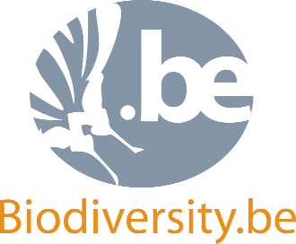
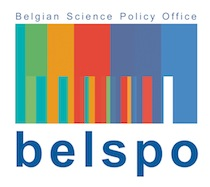
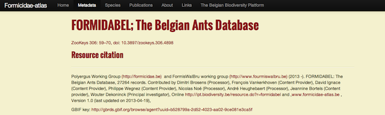

André Heughebaert et Nicolas Noé - Décembre 2013
Plateforme Belge Biodiversité
 7 "Data Publishers", 53 jeux de données d'occurrences
> 5.000.000 d'enregistrements sur 227 pays et territoires.
7 checklists pour 150.000 enregistrements.
47 publications belges (sur 1.572 au total)
sur Mendeley's (GBIF Public Library).
(Belgian Research Action through Interdisciplinary Networks)
En plus des activités GBIF, nous offrons du support informatique à notre communauté scientifique.
exemple: FORMIDABEL (Atlas des Formicidae): Jeu de données d'occurrences + Data paper + portail dédié
+ sites web de conférences, support aux projects spinoff,...
En plus du noeud GBIF,
la plateforme est Secretariat pour EPBRS, workpage leader de BiodivERsA, IPBES, Belgian Science Policy Interface, ...
Coordination de communautés de pratiques:
Kristina Articus,
Estelle Balian,
Angélique Berhault,
Dimitri Brosens,
Julien Cigar,
Hilde Eggermont,
André Heughebaert,
Hans Keune,
Nicolas Noé,
Sonia Vanderhoeven,
Aline Van Der Werf
par André Heughebaert et Nicolas Noé
Réalisé avec reveal.js